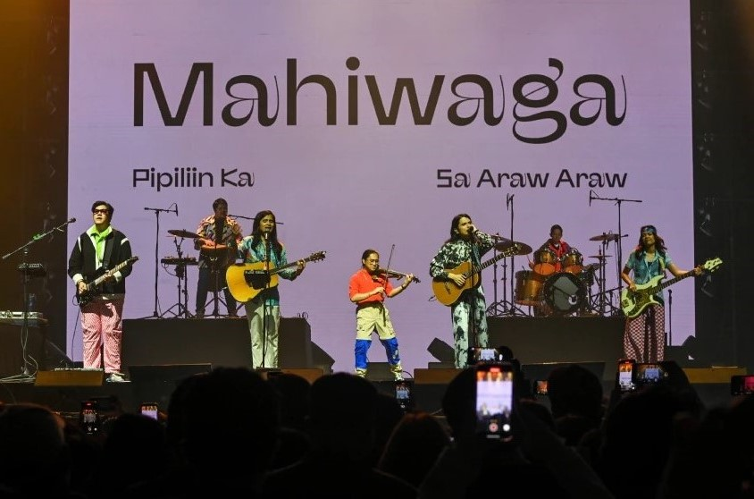

ENTERTAINMENT

'A Very Good Girl' coming to Netflix on December 27
MANILA -- After its successful run on big screens here and abroad, the blockbuster Star Cinema movie "A Very Good Girl" starring Kathryn Bernardo and Dolly de Leon is coming to Netflix. “A Very Good Girl" will be available for streaming on Netflix beginning December 27.
Read More
How Beyonce became a pop culture phenomenon
Beyonce keeps pushing boundaries and rewriting the rules of the music industry, all while embodying empowered self-representation and Black culture. Released worldwide on December 1, the concert documentary "Renaissance: A Film By Beyonce" not only features the dazzling musical acts of her record-breaking Renaissance World Tour, but also goes behind the scenes to reveal how the show was put together.
Read More

Ben&Ben named top local act on Spotify for 2023
MANILA – Folk pop band Ben&Ben returned as the most streamed local artist on music streaming platform Spotify for 2023. This also marked the band's fifth consecutive year among local favorites. Also topping the list were Zack Tabudlo, Adie, Moira Dela Torre, and Arthur Nery.
Read More
LIFE

Culture, cuisine: What to check out at South Korea's Jeonju City
South Korea's capital, Seoul, has garnered the interest of tourists, thanks in part to the global popularity of K-pop and K-drama. But travelers seeking to escape the urban cacophony can try visiting the southwestern city of Jeonju, described as a hub of culture and cuisine.
Read More

Miss Universe PH to hold homecoming parade for Michelle Dee on Dec. 10
MANILA — Miss Universe Philippines will hold a homecoming parade for Michelle Dee this month, the organization announced on Saturday. In an Instagram post, the organization said that the event will be held on December 10, 4p.m., at the SM Mall of Asia Complex.
Read More

Maginhawa Arts and Food Festival puts spotlight on small businesses
MANILA -- Around a hundred food and non-food stalls took part in the Maginhawa Arts and Food Festival (MAFF), along the portion of Maginhawa Street in Quezon City on Saturday. The one-day festival was held based on an ordinance of the local government, according to the organizers.
Read More
SPORTS

UAAP: NU women survive UST in Game 2 to keep 8-peat bid alive
MANILA (UPDATED) — National University's hopes of clinching its eighth straight UAAP women’s basketball title are still alive. This was after the Lady Bulldogs defeated University of Sto. Tomas, 72-70, in Game 2 of the Season 86 women's basketball finals on Sunday at the Araneta Coliseum in Quezon City.
Read More

UAAP: Ateneo's Kacey dela Rosa crowned MVP, UP's Favour Onoh is Rookie of the Year
MANILA – Kacey Dela Rosa of Ateneo Blue Eagles was officially crowned the Most Valuable Player of UAAP Season 86 women's basketball on Sunday at the Araneta Coliseum in Quezon City. She tallied 83.857 statistical points at the end of Season 86 eliminations, only 1.857 higher than FEU’s Josee Kaputu who got 82.0 SPs.
Read More

M5: Onic make quick work of Brazil's Bigetron Sons as Kairi, Yeb mark homecominge
MANILA (UPDATED) - Kairi "Kairi" Rayosdelsol and Coach Paul Denver "Yeb" Miranda marked their Philippine Mobile Legends: Bang Bang homecoming with a win as Indonesian squad Onic Esports swept Brazil's Bigetron Sons in their M5 World Championship group stage matchup Saturday at the EVM Convention Center.